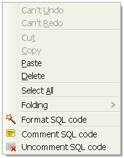
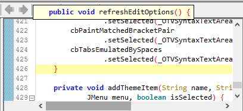

Connection
Disconnect
Commit
Rollback
File
Favorites
Editor
Text EditingMove blocks of line
Matched Bracket Popup
Schema Browser
Schema BrowserFetch Limit
Insert "select * from "
Direct editing
Duplicate
Run Script
Lobs
Import
Copy
Paste
Export
Excel
Insert Statements
Help
ManualAbout
Macros
Macros
 Connect
Connect
At startup, the connection manager is shown.
You can connect to databases, add, edit, delete or duplicate them.
The first time, there are no connections, click "Add" to create one.
| Database | URL syntax | Example |
|---|---|---|
| Teradata | jdbc:teradata://[server]/database=[database],DBS_PORT=[dbs_port],CHARSET=[charset],LOGMECH=[logmech] | jdbc:teradata://dbserver.mycompany.com/database=mydb,TMODE=TERA,DBS_PORT=1521,CHARSET=UTF8,LOGMECH=LDAP |
| Oracle | jdbc:oracle:thin:@[server]:[port]:[SID] | jdbc:oracle:thin:@dbserver.mycompany.com:1521:mydb |
| DB2 | jdbc:db2://[server]:[port]/[SID] | jdbc:db2://dbserver.mycompany.com:50000/mydb |
| MySQL | jdbc:mysql://[server]/[SID] | jdbc:mysql://dbserver.mycompany.com/mydb |
| SQLite | jdbc:sqlite:[filename] | jdbc:sqlite:C:\Databases\mydb.db |
| HSQLDB | jdbc:hsqldb:[filename] | jdbc:hsqldb:C:\Databases\mydb |
| H2 | jdbc:h2:[filename] | jdbc:h2:C:\Databases\mydb |
| Apache Derby | jdbc:derby:[directory] | jdbc:derby:C:\Databases\mydb |
| SQL Server | jdbc:jtds:sqlserver://[server]:[port]/[SID] | jdbc:jtds:sqlserver://dbserver.mycompany.com/mydb |
The connection settings are saved in the file %USERPROFILE%\open_teradata_viewer.xml.
The correct driver is yet installed into the application.
The application can connect to basically any type of database that provides a JDBC driver. Just place the driver in the directory where the application is installed and set up a connection with the appropriate URL syntax. This directory is scanned for all jar and zip files prior to connecting.
Disconnect
Disconnects from the database after performing a rollback.If the changes have to become permanent, commit before disconnect.
Commit
Commits all changes to the database since the last commit/rollback/connect.Note that auto commit is disabled, meaning that all changes made to the database have to be committed in order to become permanent.
Rollback
Rolls back all changes from the database since the last commit/rollback/connect, which means all changes are discarded.
 Open File
Open File
Opens an SQL file in the editor.
 Save File
Save File
Saves the contents of the editor to an SQL file; specifying the extension "htm" or "html" in the file name, the contents of the editor will be saved such as a Web page.Favorites
(Alt+F)
Use the favorites function to save your frequently used statements.
Selecting a favorite will load the previously saved statement in the editor pane.
Adding a favorite will save the contents of the editor pane under a new or existing named favorite.
The favorites are saved in %USERPROFILE%\open_teradata_viewer.xml.
Text Editing
(Right click)
Various text editing features are provided by RSyntaxTextArea.
Right click the editor to use them.

Clipboard History popup can be activated via Ctrl+Shift+V (Cmd+Shift+V on OS X).
Pressing Ctrl+Shift+V will cause the "clipboard history" popup to appear below the current caret position.
This popup displays the most recent snippets of text added to the clipboard. This allows you to paste any text that was *recently* on the clipboard, not just what's *currently* in the clipboard buffer. This is pretty useful if you're a frequent copy-paster.
The clipboard history is implemented as a singleton instance of the
org.fife.ui.rtextarea.ClipboardHistory class. You can access it, but currently the only interesting thing you can do is set its maximum size. By default, it only remembers the twelve most recent entries on the clipboard that can be interpreted as plain text.To indent the XML code in the editor, you can use the "Pretty print" functionality. The "Pretty print (XML only - with line breaks)" menu voice is included in the "XML Tools" sub-menu of the "Edit" menu.
Move blocks of lines
(Alt+up/down arrows)
Alt+up/down arrows moves blocks of lines, not just single lines. Select the text that you want to move and press Alt+up/down arrows.
Matched Bracket Popup
When the caret is on a bracket and the matched bracket is "above" the current one and scrolled off of the screen, RSyntaxTextArea will render the line containing the parent bracket in a small popup window after a small delay:
This allows you to quickly see the scope of the block your caret is around, without having to scroll up in the editor. If the line containing the matching brace is only whitespace and the curly brace, the line prior to that one will be in the tool tip as well (for code written in K&R style, for example).
This feature is enabled by default, but can be disabled by unselecting the "Matched Bracket Popup" option of the "View" menu or by calling
textArea.setShowMatchedBracketPopup(false) programmatically.How to enable the Spell Checking feature
for Linux users:To enable the Spell Checking feature, move the file "english_dic.zip" to the user home directory.
Run Open Teradata Viewer and select the Edit > Toggle Spell Checking menu voice.
for Windows users:
To enable the Spell Checking feature, move the file "english_dic.zip" to the same directory where Open_Teradata_Viewer_x.xx.jar resides.
Run Open Teradata Viewer and select the Edit > Toggle Spell Checking menu voice.
How to enable the Java auto-completion feature
With the Java syntax highlighting enabled, you can use the auto-completion feature specially designed for the Java language.The JRE zip or jar file, that represents the source code, should be located in the ORACLE JRE's home ${java.home}.
${java.home}/src.jar is the common location on OS X.
${java.home}/src.zip is the common location on Microsoft Windows.
 History
History
(Alt+Left) (Alt+Right)
Every time a statement is executed, regardless if it is successful, it is saved in the history.
Use the history buttons/shortcuts to browse the previously executed statements.
The history is not persisted to disk, so the lifetime is as long as the execution of the application.
 Format SQL
Format SQL
(Ctrl+Shift+F)
Formats basic SQL statements (DML and queries) to make them more readable.
Schema Browser
(Alt+Enter)
The schema browser helps you select tables, views, columns, functions and procedures from the database schema.
Once opened use the arrow keys or the mouse to select an object, pressing enter or double clicking will result in showing the selected object in the editor pane.
To cancel press escape, press Alt+Enter or click the schema browser icon.
Fetch Limit
Sets the maximum number of rows returned by the executed query. The default is 2000.Insert "select * from "
(Ctrl+S)
"select * from " is probably the most frequently used piece of syntax. Don't bother typing it over and over, just press Ctrl+S.
Direct editing
The results of your query can be directly altered in the grid. Just double click a cell, change the value and press enter, tab out or click elsewhere to confirm the change. Press escape to cancel the change.Note that every change is instantaneously sent to the database and is therefore validated immediately.
It's impossible to change a result set that is retrieved using the "order by" clause. Leave the "order by" away and sort afterwards by clicking the column headers on the grid.
Obviously, analytic results can't be changed either, as well as all complex results which prevent the record to be traced back to its source.
 Insert
Insert
Opens a form where values can be entered for the creation of a new record.The record is based on the result set of the last executed query.
 Delete
Delete
Deletes all selected records in the grid.
 Edit
Edit
Opens a form where values can be altered of the selected record.Duplicate
Opens a form where values can be entered for the creation of a new record.All initial values are based on the selected record in the grid.
 Run
Run
(Ctrl+Enter)
Executes the SQL in the editor pane. The SQL can be a query, DML, DDL, DCL, PL/SQL, a transaction block, a call, basically anything.
If a piece of text is selected, only that selection will be executed. This is useful for executing a series of statements one by one.
Run Script
Executes a series of statements in the editor pane. The statements should be semicolon separated.
 Export
Export
(Double click)
Exports a lob to a file and optionally opens it with the associated application. If the lob is in plain text, the contents are shown and it's also possible to copy it to the clipboard. Multiple lobs can also be exported in one go. To do so, select multiple lob cells, while exporting, a destination directory will be asked for and a column of that table must be selected to name the files.
Import
Imports a file into a lob.For quick editing a lob: double click the lob, save and open it, do all necessary adjustments, save the file, click Import, the previously edited file will be suggested, confirm.
Copy
Copies one or more lobs into memory.Paste
Pastes one or more lobs from memory. The number of selected lobs should equal the number of copied lobs. The order of insertion is maintained.This function is useful for database synchronization.
Excel
Exports the grid to an Excel file and optionally opens it with the associated application.
 PDF
PDF
Exports the grid to a PDF file and optionally opens it with the associated application.
 Flat File
Flat File
Exports the grid to a flat file and optionally copies it to the clipboard or saves and opens it with the associated application.Insert Statements
Converts the grid to insert statements and optionally copies it to the clipboard or saves and opens it with the associated application. Useful for database synchronization.Manual
(F1)
You're looking at it.
About
When connected, this dialog shows some version information about the database and driver.Macros
Macros are a powerful feature of Open Teradata Viewer that allow you to group several editing actions into one, so you can automate common complex editing tasks.Macros are played back via the Macros menu. You can manage previously-implemented macros via the Macros menu.
Scripted Macros in Open Teradata Viewer
In Open Teradata Viewer there is the macro functionality. You are able to write scripts in JavaScript (Rhino) or Groovy, assign them shortcuts, then use them like any other action in the Open Teradata Viewer menu bar. These scripts will run in the main Open Teradata Viewer process and will have programmatic access to the entire application. This truly allows you to extend Open Teradata Viewer in any way you can think of.
To create a scripted macro, choose “New macro...” from the “Macros“ menu:
The name of your macro must be unique among all macros and will be the menu item text. The description field is optional. Give the macro a keyboard shortcut (if you want to), select the scripting language you want to use and click OK to begin creating your macro. Rhino works out-of-the-box with Java 6+ JVM’s since it comes standard).
A script template will open in Open Teradata Viewer.
A rather large comment at the top describes the macro functionality, as well as two pre-defined variables you can use to manipulate the running Open Teradata Viewer instance.
app: The parent Open Teradata Viewer instance
textArea: The currently active RSyntaxTextArea instance
The API of RSyntaxTextArea is available here: http://javadoc.fifesoft.com/rsyntaxtextarea/org/fife/ui/rsyntaxtextarea/RSyntaxTextArea.html
In this file, you simply write out your macro. As an example, below is simple Rhino script for a (very crude) macro. It appends some text after the existing text in the current editor and displays a popup dialog. Note the focus here isn’t on the actual correctness of the algorithm, but rather the overall macro structure:
/* * This is a JavaScript macro for Open Teradata Viewer. * * Global variables include: * - app: The focused application window, an instance of * net.sourceforge.open_teradata_viewer.ApplicationFrame. * - textArea: The active text area, an instance of * net.sourceforge.open_teradata_viewer.editor.OTVSyntaxTextArea. * * You can use the entire Open Teradata Viewer and OTVSyntaxTextArea public API's: * http://javadoc.fifesoft.com/rsyntaxtextarea/ */ try { textArea.beginAtomicEdit(); textArea.append("\nThis is new text\n"); textArea.caretPosition = textArea.document.length; javax.swing.JOptionPane.showMessageDialog(app, "Text has been appended!"); } finally { textArea.endAtomicEdit(); }
Important things to take away are:
Macros are run on the EDT, so you are free to call any Swing-related methods you want without wrapping them in SwingUtilities.invokeLater().
It’s a good idea to wrap your macros in calls to textArea.beginAtomicEdit() and textArea.endAtomicEdit() if you will be manipulating the text in textArea. The latter method should also be in a “finally” block, in case any unexpected exceptions are thrown. These methods cause any action done in your macro to be remembered as a “single operation” for undo/redo purposes. Failure to do this simply means that, if you edit the text in the text component, you may have to press Ctrl+Z multiple times to get what the macro did un-done, depending on what exactly you’re doing. In the example above, we actually edited the text area’s contents, so beginAtomicEdit()/endAtomicEdit() were strictly necessary, so I left them there.
If you assigned this macro a shortcut, you can run it by simply typing said shortcut.
Editing macros can be easily be done in the “Macros” menu. This functionality is easily accessed via the “Macros” menu - “Edit macros…” menu item.
Here you can modify the absolute path of the script of the existing macros.